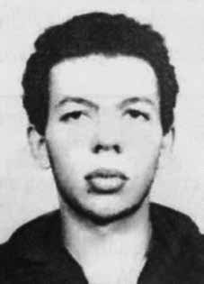

Ivan
Mota
Dias
CIRCUNSTÂNCIAS DA MORTE
Em 15 de maio de 1971, a prisão de Ivan Mota Dias foi realizada por agentes do Centro de Informações da Aeronáutica (CISA), no bairro de Laranjeiras, no Rio de Janeiro. No mesmo dia, a família recebeu um telefonema anônimo, avisando-lhes do fato.
Meses antes do ocorrido, seu nome integrava uma lista de militantes procurados pelo DOI/CODI do I Exército. Segundo informações de Alex Polari de Alverga, que estava preso na Base Aérea do Galeão no mesmo período, os alto-falantes do local anunciaram a prisão do “Comandante Cabanas”, da Vanguarda Popular Revolucionária (VPR), que era o codinome de Ivan. Em documento de monitoramento do Centro de Informações da Marinha (Cenimar), também são apontados os codinomes “Cabana” e “Eli” para identificar o militante.
Logo em seguida ao seu desaparecimento, os familiares de Ivan solicitaram um habeas corpus, que foi negado sob a justificativa de que ele nunca estivera preso pelos órgãos de segurança. Foram incansáveis na busca por notícias sobre o seu paradeiro, visitando diversas dependências do Estado e requerendo ajuda de instituições civis. Tiveram apoio do advogado Marcelo Cerqueira e do então deputado federal Lysâneas Maciel, que denunciou o caso de Ivan na tribuna da Câmara dos Deputados.
Sua mãe, Nair Mota Dias, recorreu à esposa do presidente, Emílio Garrastazu Médici, por meio de uma carta enviada em outubro de 1971, pedindo colaboração para encontrar o seu filho. A resposta, encaminhada em dezembro pelo chefe de gabinete do Serviço Nacional de Informações (SNI), coronel Jayme Miranda Mariath, foi que a última informação de Ivan é que ele participara de um assalto a um depósito de bebidas, em maio, e se encontrava foragido.
Em seu relato, Inês Etienne Romeu informou que o torturador conhecido como “Dr. Guilherme” lhe teria confessado que Ivan, referido como dirigente da VPR, fora preso no dia 15 de maio de 1971. Pouco tempo depois, ainda, afirmou-lhe que Ivan teria sido morto. Apesar da declaração de Inês indicar que agentes que a torturaram na Casa da Morte de Petrópolis conheciam Ivan, nenhuma evidência foi encontrada pela Comissão Nacional da Verdade para determinar sua passagem por este centro clandestino.
No ano de 1972, junto com Adair Gonçalves Reis, Alfredo Hélio Sirkis, José Maurício Gradel, Roberto das Chagas e Silva, Sônia Eliane Lafoz e Walter Ribeiro Novais, Ivan foi condenado, pela 2ª Auditoria do Exército, enquadrado no art. 23 da Lei de Segurança Nacional, a oito anos de reclusão por “tentar derrubar o governo através da violência e da luta armada”.
Em 1978, Nair prestou um depoimento emocionante aos autores do livro Desaparecidos políticos, sobre a angústia da ausência e da espera por explicações: “As pessoas não querem se comprometer, e por isto não dão informações. Ninguém quer se meter, se complicar. Como é que some uma pessoa e ninguém viu? Ninguém sabe de nada? […] Mesmo morto, tinha que aparecer o corpo. Alguém tinha de assumir a responsabilidade. O que não podia era uma pessoa sumir de repente e ninguém saber de nada, ninguém se responsabilizar”.
Por falta de informações do Estado brasileiro, Ivan ainda integra o quadro de desaparecidos políticos durante a ditadura militar. A angústia de seus familiares continua, sem evidências sobre as circunstâncias de sua morte e a localização de seus restos mortais.
On May 15, 1971, Ivan Mota Dias was arrested by agents from the Aeronautical Information Center (CISA), in the Laranjeiras neighborhood, in Rio de Janeiro. On the same day, the family received an anonymous call, informing them of the incident.
Months before the incident, his name was on a list of militants wanted by the DOI/CODI of the 1st Army. According to information from Alex Polari de Alverga, who was imprisoned at the Galeão Air Base during the same period, the local loudspeakers announced the arrest of “Comandante Cabanas”, from the Vanguarda Popular Revolucionária (VPR), which was Ivan's code name. In a monitoring document from the Navy Information Center (Cenimar), the code names “Cabana” and “Eli” are also mentioned to identify the militant.
Soon after his disappearance, Ivan's family requested a habeas corpus, which was denied on the grounds that he had never been arrested by security agencies. They were tireless in searching for news about his whereabouts, visiting various State facilities and requesting help from civil institutions. They had support from lawyer Marcelo Cerqueira and then federal deputy Lysâneas Maciel, who denounced Ivan's case in the Chamber of Deputies' gallery.
His mother, Nair Mota Dias, turned to the president's wife, Emílio Garrastazu Médici, in a letter sent in October 1971, asking for help in finding her son. The answer, sent in December by the chief of staff of the National Information Service (SNI), Colonel Jayme Miranda Mariath, was that Ivan's last information was that he had participated in a robbery at a liquor warehouse in May and was on the run.
In her report, Inês Etienne Romeu reported that the torturer known as “Dr. Guilherme” had confessed to her that Ivan, referred to as a leader of the VPR, had been arrested on May 15, 1971. Shortly afterwards, she told him that Ivan had been killed. Although Inês' statement indicates that agents who tortured her at the House of Death in Petrópolis knew Ivan, no evidence was found by the National Truth Commission to determine her passage through this clandestine center.
In 1972, together with Adair Gonçalves Reis, Alfredo Hélio Sirkis, José Maurício Gradel, Roberto das Chagas e Silva, Sônia Eliane Lafoz and Walter Ribeiro Novais, Ivan was condemned by the 2nd Army Audit, within the scope of art. 23 of the National Security Law, to eight years in prison for “attempting to overthrow the government through violence and armed struggle”.
In 1978, Nair gave an emotional statement to the authors of the book Political Disappearances, about the anguish of absence and waiting for explanations: "People don't want to commit themselves, and that's why they don't give information. Nobody wants to get involved, to get complicated. How come a person disappears and nobody saw it? Nobody knows anything? […] Even if dead, the body had to appear. Someone had to take responsibility. What couldn't be done was for a person to suddenly disappear and nobody to know anything, nobody to take responsibility."
Due to lack of information from the Brazilian State, Ivan is still included in the list of politically disappeared during the military dictatorship. The anguish of his family continues, with no evidence regarding the circumstances of his death or the location of his remains.
El 15 de mayo de 1971, Ivan Mota Dias fue detenido por agentes del Centro de Información Aeronáutica (CISA), en el barrio de Laranjeiras, en Río de Janeiro. Ese mismo día, la familia recibió una llamada anónima informándoles del incidente.
Meses antes del incidente, su nombre figuraba en una lista de militantes buscados por el DOI/CODI del 1.er Ejército. Según información de Alex Polari de Alverga, detenido en la Base Aérea de Galeão en el mismo período, los altavoces locales anunciaron la detención del “Comandante Cabanas”, de la Vanguarda Popular Revolucionaria (VPR), que era el nombre clave de Iván. En un documento de seguimiento del Centro de Información de la Marina (Cenimar) también se mencionan los nombres clave “Cabana” y “Eli” para identificar al militante.
Poco después de su desaparición, la familia de Iván solicitó un hábeas corpus, que fue denegado alegando que nunca había sido detenido por los organismos de seguridad. Fueron incansables en buscar noticias sobre su paradero, visitar diversas instalaciones del Estado y solicitar ayuda a instituciones civiles. Contaron con el apoyo del abogado Marcelo Cerqueira y de la entonces diputada federal Lysâneas Maciel, quien denunció el caso de Iván en la tribuna de la Cámara de Diputados.
Su madre, Nair Mota Dias, se dirigió a la esposa del presidente, Emílio Garrastazu Médici, en una carta enviada en octubre de 1971, pidiéndole ayuda para encontrar a su hijo. La respuesta, enviada en diciembre por el jefe de gabinete del Servicio Nacional de Información (SNI), coronel Jayme Miranda Mariath, fue que la última información de Iván era que había participado en un robo en un almacén de licores en mayo y que estaba prófugo.
En su informe, Inês Etienne Romeu relató que el torturador conocido como “Dr. Guilherme” le había confesado que Iván, considerado líder del VPR, había sido arrestado el 15 de mayo de 1971. Poco después, ella le dijo que Iván había sido asesinado. Aunque la declaración de Inês indica que los agentes que la torturaron en la Casa de la Muerte en Petrópolis conocían a Iván, la Comisión Nacional de la Verdad no encontró pruebas para determinar su paso por ese centro clandestino.
En 1972, junto con Adair Gonçalves Reis, Alfredo Hélio Sirkis, José Maurício Gradel, Roberto das Chagas e Silva, Sônia Eliane Lafoz y Walter Ribeiro Novais, Iván fue condenado por la 2.ª Auditoría del Ejército, en el ámbito del art. 23 de la Ley de Seguridad Nacional, a ocho años de prisión por “intentar derrocar al gobierno mediante la violencia y la lucha armada”.
En 1978, Nair hizo una emotiva declaración a los autores del libro Desapariciones políticas, sobre la angustia de la ausencia y la espera de explicaciones: "La gente no quiere comprometerse y por eso no da información. Nadie quiere involucrarse, complicarse. ¿Cómo es que una persona desaparece y nadie la ve? ¿Nadie sabe nada? […] Incluso si está muerto, el cuerpo tenía que aparecer. Alguien tenía que hacerse responsable. Lo que no se podía hacer era que una persona desapareciera repentinamente y nadie que sepa nada, nadie que asuma la responsabilidad".
Por falta de información del Estado brasileño, Iván sigue incluido en la lista de desaparecidos políticos durante la dictadura militar. La angustia de su familia continúa, sin evidencia sobre las circunstancias de su muerte ni el lugar de sus restos.